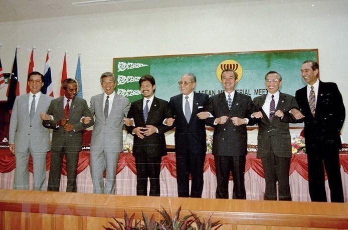

Asean-Việt Nam
Việt Nam gia nhập Asean
Gia nhập ASEAN - bước đột phá trong đổi mới tư duy đối ngoại của Việt Nam

ngày 28/7/1995. (Nguồn: Ảnh tư liệu)
- Gia nhập ASEAN là một quyết định mang tính lịch sử, một quyết sách đúng đắn và kịp thời, là bước đột phá đầu tiên để Việt Nam hội nhập khu vực và thế giới. Chính sách đối ngoại của Việt Nam đối với ASEAN gắn liền với quá trình phát triển và đổi mới tư duy đối ngoại của Việt Nam.
Quá trình gia nhập ASEAN của Việt Nam
- Hiệp hội các quốc gia Đông Nam Á (Association of Southeast Asian Nations - ASEAN) thành lập vào ngày 8/8/1967 trên cơ sở tuyên bố Bangkok, với 5 thành viên đầu tiên là Thái Lan, Indonesia, Malaysia, Singapore và Philippines. Quá trình Việt Nam gia nhập ASEAN là một chặng đường phấn đấu đầy gian nan trong gần 3 thập kỷ. Với hoàn cảnh lịch sử khách quan, trong suốt 30 năm (1945 - 1975), nhân dân Việt Nam phải tiến hành cuộc kháng chiến chống Mỹ, cứu nước. Và cũng trong thời gian này, Đông Nam Á là một khu vực bị chia rẽ sâu sắc do những ảnh hưởng của cuộc chiến tranh Lạnh.
- Tháng 1/1973, Hiệp định Paris về chấm dứt chiến tranh, lập lại hòa bình ở Việt Nam được ký kết. Sau Hiệp định Paris, Việt Nam dù không có quan hệ với ASEAN nhưng vẫn hợp tác song phương với các nước thành viên của tổ chức này. Đại thắng mùa xuân năm 1975, chấm dứt chiến tranh ở Việt Nam đã đem lại nền độc lập, thống nhất hoàn toàn cho dân tộc ta, đồng thời cũng dẫn đến những thay đổi căn bản trong tình hình Đông Nam Á. Quan hệ Việt Nam - ASEAN bắt đầu xuất hiện những bước khởi đầu tốt đẹp từ chuyến thăm lần lượt các nước ASEAN của Thủ tướng Phạm Văn Đồng và Bộ trưởng Bộ Ngoại giao Nguyễn Duy Trinh vào cuối năm 1977 và đầu năm 1978.
- Sau những chuyến thăm này, tại hội nghị được tổ chức vào tháng 2/1985, Ngoại trưởng các nước ASEAN đã thống nhất việc đối thoại trực tiếp với Đông Dương nhằm giải quyết vấn đề Campuchia và lập lại hòa bình ổn định khu vực. Năm 1986, Việt Nam bắt đầu tiến hành công cuộc đổi mới, trong đó “tư duy đối thoại mới” hình thành, cách nhìn nhận với ASEAN đã có chuyển biến. Lúc này, Đảng ta cũng xác định “phải tăng cường quan hệ với các nước Đông Nam Á”. Chưa đầy một năm, vào tháng 8/1987, trong cuộc gặp tại TPHCM giữa Việt Nam với Indonesia - đại điện ASEAN, Bộ trưởng Bộ Ngoại giao Nguyễn Cơ Thạch bày tỏ nguyện vọng muốn gia nhập ASEAN.
- Chiến tranh Lạnh kết thúc vào năm 1991 cũng đã làm thay đổi cục diện khu vực, đặt ra cho ASEAN yêu cầu tìm hướng đi mới. Mở rộng ASEAN vì hòa bình, hợp tác, phát triển của khu vực và từng thành viên, trở thành mục tiêu mới của Hiệp hội. Cũng trong lúc này, từ ngày 24/10 - 1/11/1991, Thủ tướng Võ Văn Kiệt lần lượt thăm hữu nghị chính thức Indonesia, Thái Lan và Singapore. Những nỗ lực ngoại giao trên đã làm thay đổi diện mạo quan hệ đối đầu ASEAN - Đông Dương sang hướng hòa dịu, tạo điều kiện cho quá trình đàm phán gia nhập ASEAN của Việt Nam được đẩy nhanh.
- Ngày 20/5/1988, Bộ Chính trị ra Nghị quyết số 13/NQ-TW về “nhiệm vụ và chính sách đối ngoại trong tình hình mới”, nhấn mạnh chủ trương “thêm bạn, bớt thù”, ra sức tranh thủ các nước anh em, bè bạn và dư luận rộng rãi trên thế giới, chủ động chuyển cuộc đấu tranh từ trạng thái đối đầu sang đấu tranh và hợp tác cùng tồn tại hòa bình. Thực hiện những phương châm đối ngoại trên, năm 1992, Việt Nam tham gia Hiệp ước Thân thiện và Hợp tác ở Đông - Nam Á (TAC) và trở thành quan sát viên, tham dự các Hội nghị Bộ trưởng ASEAN (AMM) hằng năm. Việt Nam cũng bắt đầu tham gia các hoạt động của một số Ủy ban hợp tác chuyên ngành ASEAN.

Hội nghị cấp cao ASEAN lần thứ 6, diễn ra tại Hà Nội từ 15-16.12.1998. (Nguồn: Ảnh tư liệu)
- Đến tháng 10/1993, Việt Nam đưa ra chính sách 4 điểm mới, trong đó khẳng định “chủ trương tăng cường hợp tác nhiều mặt với từng nước láng giềng cũng như với ASEAN với tư cách là một tổ chức khu vực, sẵn sàng gia nhập ASEAN vào thời điểm thích hợp”. Sau đó, vào tháng 7/1994, Việt Nam được mời tham dự cuộc họp của Diễn đàn Khu vực ASEAN (ARF) và trở thành một trong những thành viên sáng lập của Diễn đàn này.
- Hội nghị Bộ trưởng Ngoại giao ASEAN lần thứ 28 (AMM-28) diễn ra ở thủ đô Bandar Seri Begawan của Brunei Darussalam, Việt Nam chính thức gia nhập ASEAN - ghi dấu mốc quan trọng trong tiến trình hội nhập khu vực và thế giới của Việt Nam. Với ASEAN, việc kết nạp Việt Nam trở thành thành viên thứ 7 giúp đẩy nhanh quá trình mở rộng Hiệp hội ra cả 10 nước trong khu vực, qua đó củng cố hòa bình, ổn định ở một khu vực có tầm quan trọng đặc biệt về địa - chính trị và địa - kinh tế, là trung tâm kết nối Thái Bình Dương và Ấn Độ Dương.
Phát triển phương châm đối ngoại “đa phương hóa, đa dạng hóa”
- Sau khi thống nhất đất nước, Đảng và Nhà nước ta đã đề xuất chính sách mở cửa ra bên ngoài với mong muốn được đối thoại trực tiếp với các nước Đông Nam Á. Năm 1976, Việt Nam công bố chính sách 4 điểm xác định rõ ràng quan hệ láng giềng hữu nghị đối với các nước Đông Nam Á, chủ yếu là các nước ASEAN. Tuyên bố 4 điểm khẳng định: “Tôn trọng độc lập chủ quyền và toàn vẹn lãnh thổ của nhau, không xâm lược nhau, không can thiệp vào công việc nội bộ của nhau, bình đẳng, cùng có lợi, cùng tồn tại hòa bình; giải quyết các tranh chấp thông qua thương lượng… Phát triển hợp tác vì sự nghiệp xây dựng đất nước phồn vinh theo điều kiện riêng của mỗi nước vì độc lập dân tộc, hòa bình trung lập thật sự ở Đông Nam Á”. Những quan điểm này cũng đáp ứng được mong muốn của ASEAN, thể hiện tinh thần kết nối với các nước láng giềng trong khu vực; do đó, nhận được sự hoan nghênh của các nước ASEAN.

tại Lào bàn về Cộng đồng kinh tế ASEAN. (Nguồn: Ảnh tư liệu)
- Trong những năm 80 của thế kỷ XX, tình trạng bị cô lập chính trị và bao vây kinh tế kết hợp với cuộc khủng hoảng kinh tế đặt ra yêu cầu cấp thiết phải đổi mới và điều chỉnh tư duy đối ngoại. Trên thực tế, để hiện thực hóa sự kiện gia nhập ASEAN vào ngày 28/7/1995, Việt Nam đã trải qua những bước phát triển mạnh mẽ trong tư duy đối ngoại. Đây là một trong những điểm đột phá đầu tiên để triển khai phương châm đối ngoại “đa phương hóa, đa dạng hóa” mà Ðại hội Ðảng lần thứ VII (năm 1991) đã đề ra. Đó được xem là một quyết định sáng suốt, kịp thời, đúng đắn của Ðảng và Nhà nước, đem lại nhiều lợi ích cho đất nước và nhân dân Việt Nam.
- Quá trình hội nhập và tham gia của Việt Nam trong ASEAN gắn liền với quá trình Đổi mới, hội nhập quốc tế của đất nước. Chúng ta đã có những bước tiến mạnh mẽ trong đổi mới tư duy đối ngoại, từ chủ trương “thêm bạn, bớt thù”[1], đa dạng hóa, đa phương hóa quan hệ quốc tế, “chuyển từ đối đầu sang đối thoại” và trở thành “thành viên chủ động, tích cực, có trách nhiệm” trong ASEAN. Đến Đại hội XII (năm 2016), Đảng ta tiếp tục xác định phương hướng đối với hợp tác trong ASEAN là “chủ động, tích cực và có trách nhiệm cùng các nước ASEAN xây dựng Cộng đồng vững mạnh”, “chủ động tham gia và phát huy vai trò tại các cơ chế đa phương, đặc biệt là ASEAN và Liên hợp quốc”.
- Chính sách đối với ASEAN đã trở thành một bộ phận quan trọng trong chính sách đối ngoại của Việt Nam. Điều này được nhấn mạnh trong các văn kiện, nghị quyết của Đảng về đối ngoại, đặc biệt là Chỉ thị 25-CT/TW ngày 8/8/2018 của Ban Bí thư về “đẩy mạnh và nâng tầm đối ngoại đa phương đến năm 2030”. Trong đó, nhấn mạnh nội dung cần “tiếp tục phát huy và khai thác có hiệu quả vai trò thành viên của Cộng đồng Kinh tế ASEAN”, “phát huy vị thế của Việt Nam trong xây dựng Cộng đồng Chính trị - An ninh ASEAN 2025, tăng cường vai trò trung tâm của ASEAN ở khu vực và nâng cao vị thế, sự hiện diện của Cộng đồng trên trường quốc tế”.
- Tại Đại hội XIII của Đảng (năm 2021), tư duy về đối ngoại song phương và đa phương có những bước phát triển mới. Về đối ngoại đa phương cần “chủ động tham gia, tích cực đóng góp, nâng cao vai trò của Việt Nam trong xây dựng, định hình các thể chế đa phương và trật tự chính trị - kinh tế quốc tế”, và “trong những vấn đề, các cơ chế quan trọng, có tầm chiến lược đối với lợi ích Việt Nam, phù hợp với khả năng và điều kiện cụ thể”. Song dù hội nhập thế giới nhưng đường lối đối ngoại của Đảng vẫn phải “bảo đảm cao nhất lợi ích quốc gia - dân tộc, trên cơ sở các nguyên tắc cơ bản Hiến chương Liên hợp quốc và luật pháp quốc tế, bình đẳng và cùng có lợi”
“Việt Nam cần ASEAN và ASEAN cần Việt Nam”
- Hơn 25 năm gia nhập, Cộng đồng ASEAN đã ghi nhận những đóng góp tích cực của Việt Nam vào sự phát triển chung của Hiệp hội, tạo nền tảng để thành lập Cộng đồng ASEAN - gắn kết về chính trị, liên kết về kinh tế và sẻ chia trách nhiệm xã hội. Định hướng phát triển của ASEAN cũng rất phù hợp với chính sách phát triển của Việt Nam, vừa tận hưởng những lợi ích mà Cộng đồng ASEAN mang lại, vừa chủ động đề xuất những sáng kiến, định hướng để chung tay xây dựng Cộng đồng. Các lãnh đạo ASEAN đã thông qua Tầm nhìn Cộng đồng ASEAN 2025: “Cùng vững vàng tiến bước, cam kết xây dựng “một Cộng đồng hòa bình, ổn định và tự cường với năng lực được nâng cao để ứng phó hiệu quả với các thách thức”.
- Trong bối cảnh thế giới và khu vực thời gian gần đây chịu nhiều tác động từ những biến động địa - chính trị và dịch bệnh COVID-19, những đóng góp của Việt Nam đã được cộng đồng quốc tế ghi nhận là nước Chủ tịch ASEAN 2020 có trách nhiệm và đầy đủ năng lực để “chèo lái con thuyền” ASEAN vững bước đi lên. Sự tự tin, vững vàng mà chúng ta có được ngày hôm nay bắt nguồn từ nền tảng đường lối đối ngoại đúng đắn, sáng suốt của Đảng và thành tựu của quá trình hơn 25 năm Việt Nam đồng hành cùng ASEAN. Những thành tựu đó được thể hiện cụ thể như sau:
- Về Chính trị - Ngoại giao: Việt Nam gia nhập ASEAN đã đóng góp vào việc hình thành, củng cố và phát triển các thể chế do ASEAN thành lập và dẫn dắt như: quyết định mở rộng Hội nghị cấp cao Ðông Á (EAS) để kết nạp thêm Mỹ và Nga; lần đầu tổ chức Hội nghị Bộ trưởng Quốc phòng ASEAN mở rộng (ADMM+); vận động để đại diện cho ASEAN dự Hội nghị cấp cao Nhóm các nền kinh tế phát triển và mới nổi hàng đầu thế giới (G20). Đặc biệt, từ năm 1995 đến năm 1999, Việt Nam rất tích cực thúc đẩy kết nạp các nước Lào, Myanmar và Campuchia vào ASEAN. Kể từ sau khi gia nhập ASEAN, Việt Nam đã xây dựng quan hệ ngoại giao với 189/193 quốc gia thành viên Liên hợp quốc; có quan hệ đối tác chiến lược và đối tác toàn diện với 30 nước; tham gia và đóng góp tích cực ở hầu hết các tổ chức, diễn đàn quốc tế quan trọng với vị thế, uy tín ngày càng cao tại khu vực thông qua ASEAN và quốc tế với cương vị Ủy viên không thường trực Hội đồng Bảo an Liên hợp quốc nhiệm kỳ 2020 - 2021 mà Việt Nam nhận được số phiếu ủng hộ gần như tuyệt đối.
- Trên thực tế, ASEAN là đối tác xuất khẩu lớn thứ tư của Việt Nam (sau Mỹ, EU, Trung Quốc) là thị trường cung cấp hàng hóa nhập khẩu lớn thứ ba vào Việt Nam (sau Trung Quốc và Hàn Quốc). Đánh giá về những đóng góp của Việt Nam với ASEAN và ngược lại, Giáo sư Yasuhiro Yamada, trợ lý đặc biệt của Chủ tịch Viện Nghiên cứu kinh tế ASEAN và Đông Á (ERIA) về vấn đề Campuchia - Lào - Myanmar - Việt Nam đã nhấn mạnh: “Vốn FDI từ các nước ASEAN chảy vào Việt Nam trong 25 năm qua đã khẳng định, Việt Nam là điểm đến đầu tư hấp dẫn của khu vực. Những dòng vốn FDI vào các khu công nghiệp tại Việt Nam là xung lực đưa kinh tế Việt Nam đi lên, đồng thời giúp thu hẹp khoảng cách phát triển với các quốc gia trong khu vực”.
- Về Văn hóa - Xã hội: Khi đề xuất thành lập Cộng đồng ASEAN, giới lãnh đạo ASEAN ban đầu chủ yếu tập trung cho việc xây dựng 2 cộng đồng chính, gồm Cộng đồng An ninh - Chính trị và Cộng đồng Kinh tế, còn Cộng đồng Văn hóa - Xã hội về sau mới được xây dựng với đóng góp lớn từ Việt Nam. Việt Nam đề xuất nhiều sáng kiến về phúc lợi xã hội, giáo dục, y tế và gắn kết người dân ASEAN nhằm xây dựng chất lượng cuộc sống của họ được quan tâm và bảo đảm. Ngoài ra, chính sách miễn thị thực du lịch ngắn hạn giữa các nước ASEAN và hạ tầng du lịch ngày càng thuận lợi, ngành du lịch ở các nước ASEAN đã cất cánh mạnh mẽ trong thời gian qua và thu hút được nguồn khách quốc tế lớn, tạo nên nguồn thu quan trọng cho nền kinh tế. Một thành tựu quan trọng khác khi Việt Nam gia nhập ASEAN là đã rèn luyện, đào tạo và nâng cao trình độ của đội ngũ cán bộ đối ngoại, nhất là cán bộ làm công tác đa phương của Việt Nam; giúp chúng ta ngày càng vững vàng hơn khi “vươn ra biển lớn” khi hội nhập toàn cầu.
- Trên cương vị là Chủ tịch ASEAN 2020, với chủ đề “Gắn kết và Chủ động thích ứng”, Việt Nam khẳng định: “Để tiếng nói được lắng nghe ở khu vực và quốc tế, các nước thành viên ASEAN cần thấm nhuần “Tư duy Cộng đồng, Hành động Cộng đồng”, nghĩa là gắn “lợi ích quốc gia - dân tộc” với “lợi ích cộng đồng và hành động”. Những quan điểm đối ngoại và tư duy đó đã tạo nên sự vững vàng của Việt Nam trong vai trò Chủ tịch ASEAN.
- Năm 2020, tại lễ kỷ niệm 25 năm ngày Việt Nam gia nhập ASEAN, Phó Thủ tướng kiêm Bộ trưởng Bộ Ngoại giao Phạm Bình Minh khẳng định: “Việc Việt Nam gia nhập ASEAN là sự gặp nhau giữa chủ trương của Việt Nam đối với các nước trong khu vực và yêu cầu của các nước trong khu vực nhìn nhận về vai trò của Việt Nam trong bối cảnh mới của tình hình quốc tế. Nói một cách khác, Việt Nam cần ASEAN và ASEAN cũng cần Việt Nam”.
Xem thêm tại đây....